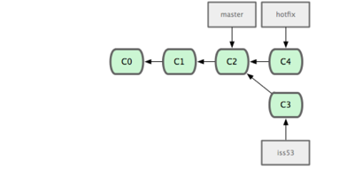
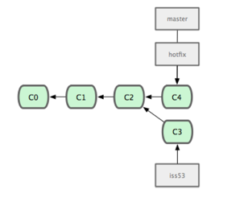
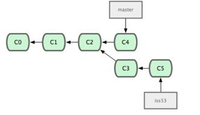
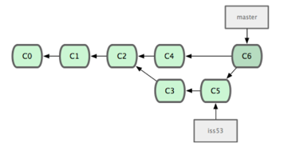

9. Merging
First branch
$ git checkout -b iss53
$ vim index.html
$ git commit -a -m "fixed 1/2 [issue 53]"
Second branch
$ git checkout master
$ git checkout -b hotfix
$ vim index.html
$ git commit -a -m "hotfix"

Merge and delete hotfix
$ git checkout master
$ git merge hotfix
$ git branch -d hotfix

One more change on iss53
$ git checkout iss53
$ vim index.html
$ git commit -a -m "fixed [issue 53]"

The 3-way merge
$ git checkout master
$ git merge iss53
$ git branch -d iss53

Previous
Next